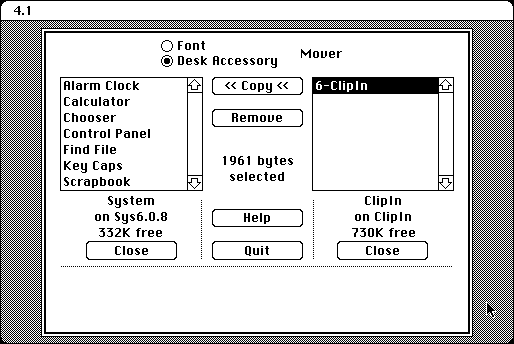

Download (external link)
Font_DA_Mover_4.1.sea.bin (53K) Font/DA Mover 4.1
copyright: Apple Computer, Inc.
mod date: Feb 16, 1994
license: free, but don't redistribute
Lets “you copy fonts and desk accessories”, “or remove them”. This version, unlike the earlier version that comes with System 6.0.8, can move TrueType fonts. It can also run in System 7, though that is not usually useful.

Some version of Safari for Mac OS X have been observed to have trouble downloading this file. This turns out to be a problem with the “Open "safe" files after downloading” option in the Safari General preferences. Turn this option off. Even if it worked, this option should still be turned off, because you want the “.bin” file, rather than extracting the application in OS X.
To use this application, you can import “Font_DA_Mover_4.1.sea.bin” into Mini vMac with ImportFl, and then open this “.bin” file with binUnpk, and then run the resulting self extracting archive application.
Here is the md5 checksum for the download, signed with Gryphel Key 5:
--------- GRY SIGNED TEXT --------- 95113ac03e689241392450c0e79521f0 Font_DA_Mover_4.1.sea.bin ------- BEGIN GRY SIGNATURE ------- Gry/4Xa8CFcUzxdN/JrvqPAry925XMTbFtZLoTuBxtg+isHQ0AnWLoSEw8cJRvh0 Q4TiMP50LQZShokv390rAwTnTzayTBRt+WiqzpPBMmpEHEAV2TXE/HPhMjUAIKeX d/FoME2t9imhtArsnHUV1QkXYYMoFzE9JDXG3kWJSHGwecIjblnpZPCAPA01Xpb3 -------- END GRY SIGNATURE --------